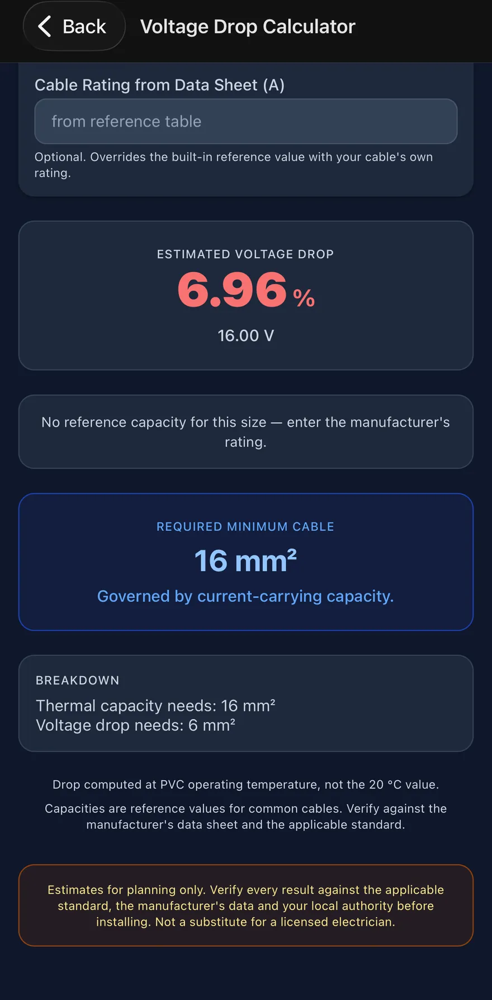
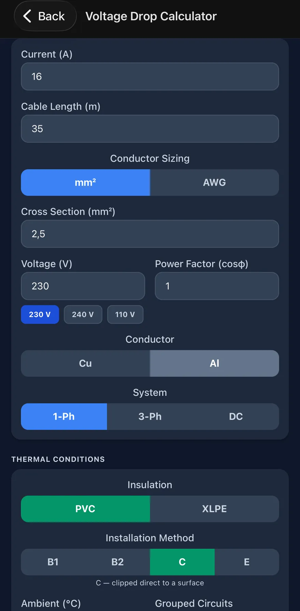
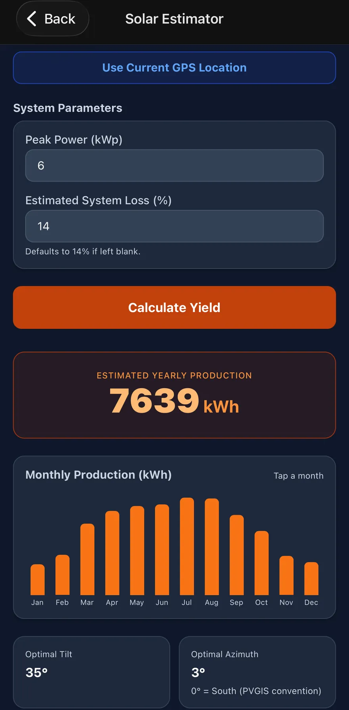
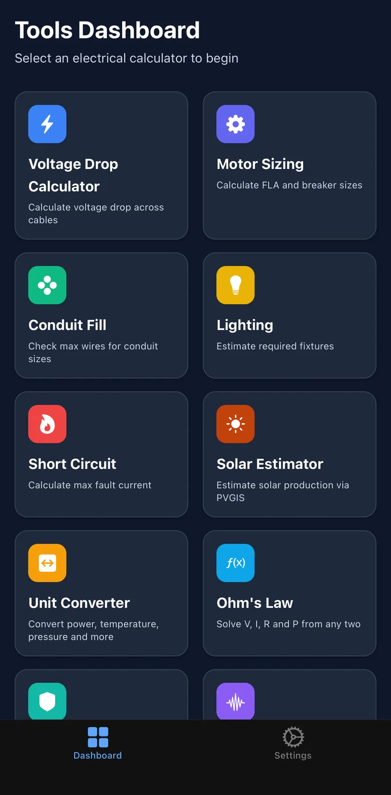
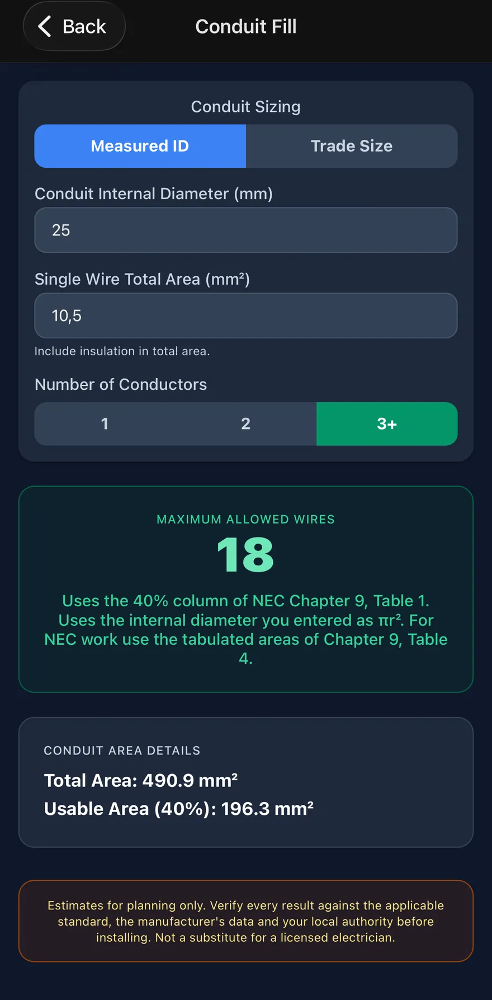
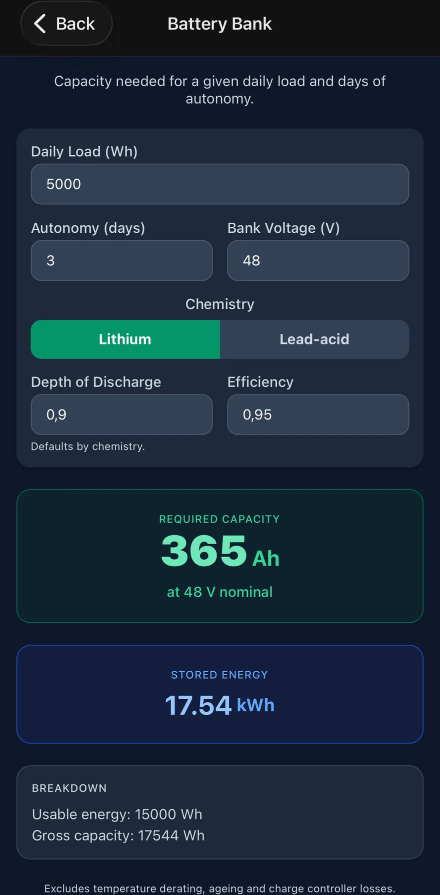
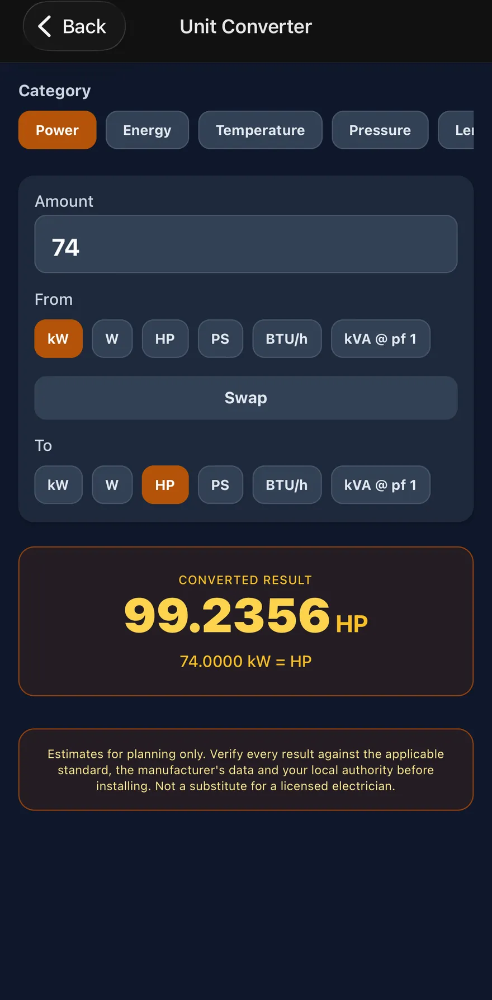
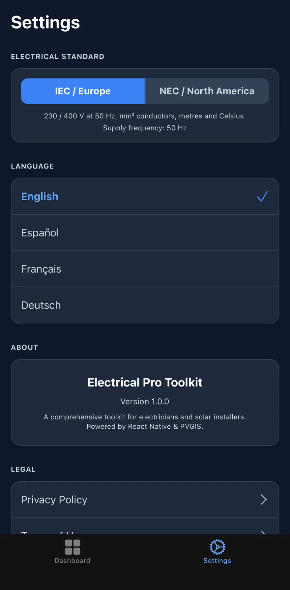

A cable has two limits. Most tools check one.
A conductor has to carry its current without overheating, and hold the voltage drop within target over the run. These are independent limits, and which one governs flips depending on the job — short and heavy, thermal wins; long and light, the drop wins. Size against either alone and you will be wrong half the time.
Both are shown. The larger one is what you install.

How it arrives at a size
Five steps, in this order, every time. The app shows the working next to the number rather than asking you to take it on faith.
You describe the installation, not just the load
Insulation, installation method, ambient temperature and how many circuits are bunched together. On a warm roof void with six circuits in one tray, these move the answer further than the current does.
Thermal axis — tabulated capacity, then the derating
The reference capacity for that size and method is multiplied by the ambient and grouping factors. Under NEC the derated result is then capped at the termination rating you selected, 60 °C or 75 °C, because the limit is usually the lug and not the cable — NEC 110.14(C).
Drop axis — resistance at operating temperature
Conductor resistivity is taken at normal service temperature, as
IEC 60364-5-52 defines it: ρ = 1.25 × ρ₂₀, so copper enters the
calculation at κ = 44.8 rather than the 20 °C figure of 56.
Computing a hot cable with cold-copper numbers understates the drop by 20%.
The governing size is the larger of the two
Each axis produces a required area independently. The result is whichever is bigger, stepped up to the next real size — mm² on IEC, AWG and kcmil on NEC — and labelled with which axis governed it.
If it cannot be met, it says so
When no size in the table can carry the load, or none holds the drop target, the app reports that exhaustion rather than quietly returning the largest row. A constraint that could not be satisfied never renders as one that was.

Step 01, on screen
Conductor material, system type, insulation, installation method, ambient and grouping all sit in the same form as the current and the length, because they all change the answer.
DC is a first-class system alongside 1-phase and 3-phase, and it carries no assumed nominal voltage. A 12 V bank and a 600 V string are both DC, so rather than pick one the percentage stays blank until you enter the actual bus voltage.
Every reference capacity can be overridden with the rating printed on your own cable's data sheet.
Yield from your coordinates, not from a rule of thumb
The one tool that reaches the network. The other eleven run entirely on the device.
Solar Estimator
Enter peak power and system loss, drop a pin or use your current position, and it queries PVGIS v5.2 — the European Commission's irradiation database — for that exact latitude and longitude.
You get annual production, a month-by-month breakdown you can tap for the figure behind each bar, and the optimal tilt and azimuth for the site. Azimuth follows the PVGIS convention where 0° is south.
System loss defaults to 14% and is yours to change. Nothing about your location is stored or sent anywhere except to PVGIS to answer the query.

Twelve tools, one grammar
Same shape on every screen: inputs at the top, the result in the middle, the assumptions underneath it. Nothing is hidden behind a menu.





Scroll for more →
What each one works out
Every calculator names the method it uses, on screen, next to the number.
| Calculator | What it works out | Basis |
|---|---|---|
| Voltage Drop | Drop across a run, 1-phase, 3-phase and DC | IEC 60364 |
| Cable Ampacity | Capacity after ambient, grouping and install method | 60364-5-52 · 310.16 |
| Motor Sizing | Full load amps, breaker, synchronous speed | NEC 430 |
| Short Circuit | Fault current at a transformer secondary | Infinite bus |
| Conduit Fill | Conductors per conduit, measured ID or trade size | Ch. 9 T1 · T4 |
| Earth Conductor | Protective conductor, and EGC by device rating | 60364-5-54 · 250.122 |
| Power Factor | Capacitor bank in kVAr, and in µF at your frequency | Q = P(tanφ₁−tanφ₂) |
| Lighting | Fixture count for a target illuminance | Lumen method |
| PV String Sizing | Modules per string inside the inverter window | IEC 62548 |
| Solar Yield | Monthly and annual production at your coordinates | PVGIS v5.2 |
| Battery Bank | Off-grid capacity from load, autonomy and DoD | Ah = Wh ⁄ V |
| Ohm's Law | V, I, R and P from any two | V = IR |
Built for both sides of the Atlantic
One setting switches the whole app, not just the labels.
What it will tell you that it doesn't know
A calculator that hides its assumptions is harder to trust than one that shows them.
It refuses rather than guesses
When no standard size can carry the load, or none meets the drop target, it says so and shows nothing. A missing constraint never renders as a satisfied one.
DC has no assumed voltage
A 12 V bank and a 600 V string are both DC. Rather than pick one, it leaves the percentage blank until you enter the actual bus voltage.
Reference tables are labelled as such
Built-in ampacities are convenience values, checked against published sources and marked where those sources disagree. Any of them can be overridden with the rating from your own cable.
It works where the job is
Eleven of the twelve run with no connection at all. No account, no sign-in, and nothing you type is sent anywhere.